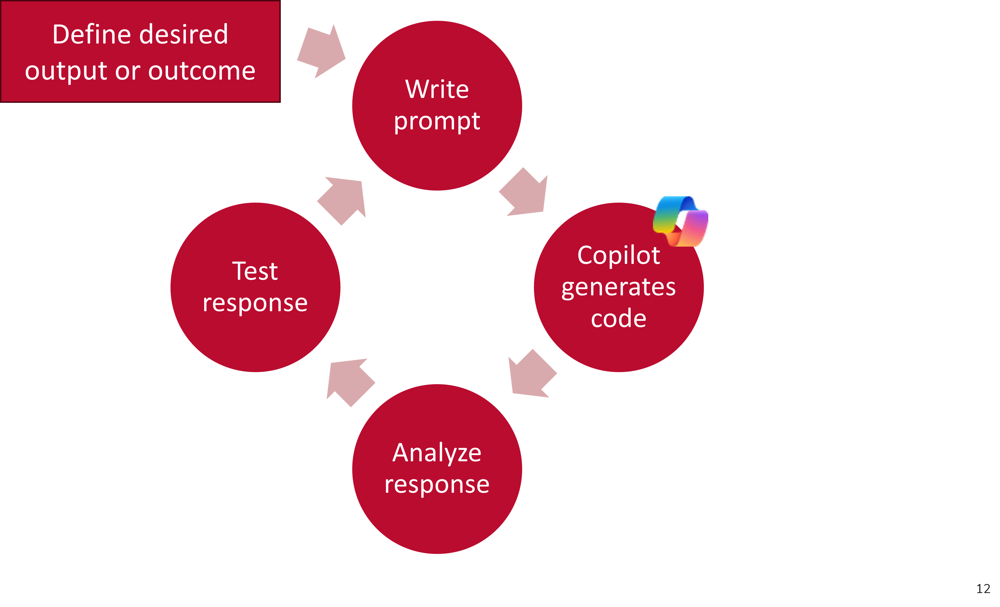
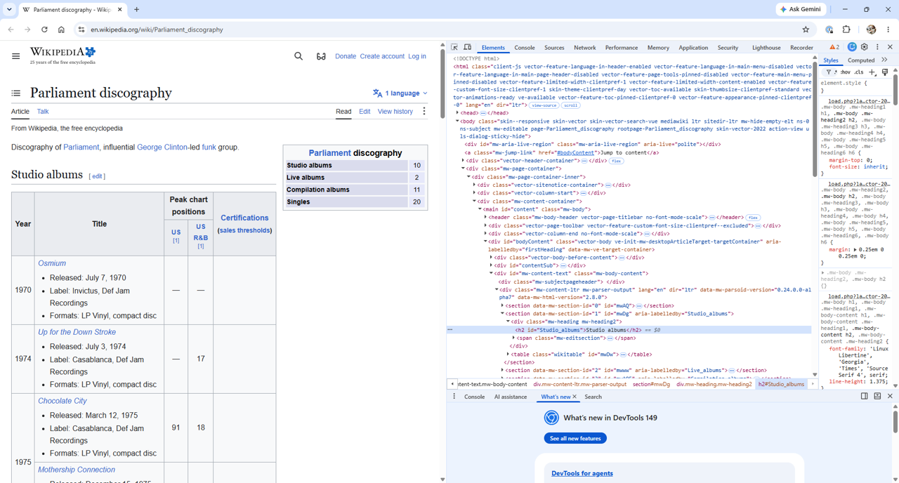
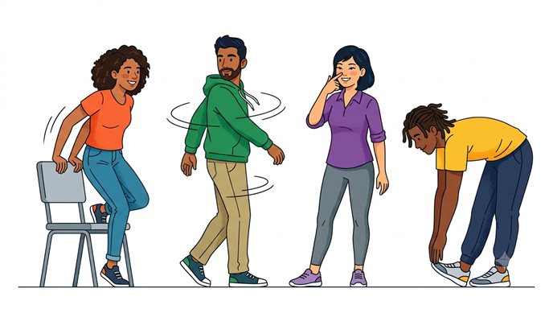
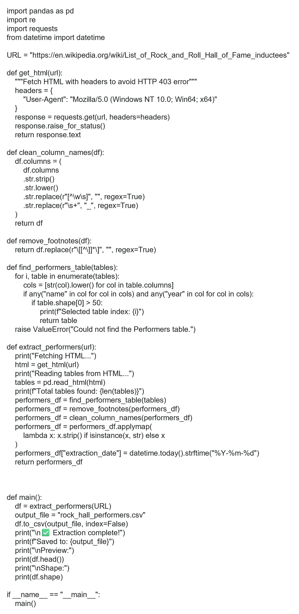

Python Mastering the Basics
Part 2: AI-Assisted Programming
Getting Started
Create an empty file named python_workshop on your desktop
Download and place in your python_workshop folder:
- carmen_ohio.txt
- carmen_ohio_revised.txt
- python_mastering_basics_workshop_exercises.py
Open Pandas Cheet Sheet
Learning Objectives
Python Fundamentals
- Construct variables, manipulate strings, and loop through lists
- Build and navigate dictionaries
- Define and use functions
- Export data to CSV files
AI-Assisted Programming
- Develop effective plain-language AI-prompts to generate, explain, and refine Python code.
- Analyze, test and refine AI-generated Python code.
AI can …
- Explain code in plain language
- Help set up your environment and tools
- Simplify technical documentation
- Generate and improve code documentation
- Support debugging and troubleshooting
- Identify, explain and help fix errors
- Recommend solutions and alternative approaches
- Enable rapid prototyping of ideas
- Facilitate learning through guided experimentation
Mastering the basics can help you …
- Write clearer, more precise AI prompts
- Assess whether AI-generated code is correct and efficient
- Test, validate, and debug your assumptions
- Recognize bias in data, logic, and outputs
- Read, customize, and confidently reuse and apply shared code
Quick review
- Absolute vs. relative paths
- Reading and writing files
- Working with strings
- Conditionals and comparisons
- Lists and Loops
- Dictionaries
- Functions
- Export data to CSV file
pandas
A pandas DataFrame is one of the most powerful and commonly used data strutures in Python for working with tabular data, or data that is organized in rows and columns, similar to a spreadsheet or SQL tables. Think of it like an Excel or Google sheet or a table in a database, with:
- Rows (each representing an observation or record)
- Columns (each representing a variable or feature)
| “year” | “title” | “author” | “number_challenges” | “rank” | |
|---|---|---|---|---|---|
| 1 | 2025 | “Sold” | “Patricia McCormick | 36 | 1 |
| 2 | 2025 | “The Perks of Being a Wallflower” | “Stephen Chbosky” | 33 | 2 |
| 3 | 2025 | “Gender Queer” | Maia Kobabe” | 25 | 3 |
| 4 | 2025 | “Empire of Storms” | “Sarah J. Maas” | 24 | 4 |
| 5 | 2025 | “Last Night at the Telegraph Club” | “MAlinda Lo” | 23 | 5 |
| 6 | 2025 | “Tricks” | “Ellen Hopkins” | 23 | 5 |
df = pd.DataFrame({
"year" : 2025,
"rank" : [1,2,3,4,5,5],
"title" : ["Sold","The Perks of Being a Wallflower","Gender Queer","Empire of Storms","Last Night at the Telegraph Club","Tricks"],
"author" : ["Patricia McCormick","Stephen Chbosky","Maia Kobabe","Sarah J. Maas","Malinda Lo","Ellen Hopkins"],
"number_challenges" : [36,33,25,24,23,23]
})PROJECT
When learning Python, it’s incredibly helpful to work with data that matters to you. To explore creating effective plain-language AI prompts to generate, explain, and refine Python code we will extract the Performers table found on the List of Rock and Roll Hall of Fame inductees webpage in Wikipedia. We will then assemble discographies for 2-3 of our favorite artists and store these discographies in a separate folder for each artist.
Webscraping or API projects: Basic steps
- Review and understand copyright and terms of use
- Check to see if an API is available
- Examine the URL
- Inspect the elements
- Identify Python libraries for project
- Write and test code

Effective plain-language AI prompts
- Strike a balance. Be specific without overwhelming detail.
- Ask for one step or solution at a time.
- Specify the format of the response (ie. Python script, explanation, documentation).
- Clearly define the desired output or outcome.
Describe what you want to build in plain language. Then have Copilot ask follow-up questions to clarify your idea and identify any gaps. Once your goal is well defined, ask Copilot to create a system prompt that helps it select the best Python tools, libraries, and techniques for your project.
Example: “I want to build a [describe your project]. Ask me any questions you need to better understand my goal, then help me create a system prompt that will guide you in selecting the right Python tools and libraries.”
Copyright | Terms of Use
Before starting any web scraping or API project, you must
Review and understand the terms of use
- Do the terms of service include any restrictions or guidelines?
- Are permissions/licenses needed to scrape data?
- Is the information publicly available?
- If a database, is the database protected by copyright? Or in the public domain?
Check for robots.txt directives robots.txt directives limit web scraping or web crawling. Look for this file in the root directory of the website by adding /robots.txt to the end of the url. Respect these directives.
Exercise 1: Examine Copyright | Terms of Use
Locate and read the terms of use for the List of Rock and Roll Hall of Fame inductees found on Wikipedia.
- What are the copyright restrictions for this resource?
- What are the terms of use?
Solution:
Read Wikipedia Creative Commons Attribution-ShareAlike 4.0 License
Exercise 2: API Available?
Is an API available?
Solution:
Yes, but it may take some time to learn how to use. It is not necessary for today’s project.
Exercise 3: Examine the URL
Select 2-3 inductees from the Performers category and locate their album discography in Wikipedia. Examine the structure of the URL for each album discography page.
Solution:
Example: Parliament-Funkadelic
Parliament discography
https://en.wikipedia.org/wiki/Parliament_discography
https:// + en.wikipedia.org/ + wiki/ + Parliament_discography
Funkadelic discography
https://en.wikipedia.org/wiki/Funkadelic_discography
https:// + en.wikipedia.org/ + wiki/ + Funkadelic_discography
Inspect the elements
Both XML and HTML are structured as trees, where elements are nested within one another. When you request a URL, the server returns an HTML or XML document. Your browser then downloads and parses this document to display it visually. Google Chrome’s Developer Tools (F12) allow us to explore and understand the structure of a webpage

Exercise 4: Inspect the elements
Go to the discography page for each artist you selected. Are there differences in how the tables are structured and presented on each page? For example, do tables have a title or header?
Brain Break
- Stand up
- Turn around
- Touch your nose
- Touch your toes

pandas
A pandas DataFrame is one of the most powerful and commonly used data strutures in Python for working with tabular data, or data that is organized in rows and columns, similar to a spreadsheet or SQL tables. Think of it like an Excel or Google sheet or a table in a database, with:
- Rows (each representing an observation or record)
- Columns (each representing a variable or feature)
pd.read_html()
Use pandas to read HTML tables directly into DataFrames with .read_html(). This extremely useful tool extracts all tables present in a specified URL or file, allowing each table to be accessed using standard list indexing and slicing syntax.
The following code instructs Python to go to the Wikipedia List of states and territories of the United States and retrieve the second table.
import requests
import pandas as pd
from io import String IO # Recommended to avoid FutureWarning.
url='https://en.wikipedia.org/wiki/List_of_states_and_territories_of_the_United_States'
headers = {'User-Agent':'Mozilla/5.0'}
response = requests.get(url, headers=headers).text
tables = pd.read_html(StringIO(response))
tables[1]requests
The requests library retrieves HTML or XML documents from a server and processes the response.
Beautiful Soup
BeautifulSoup parses HTML and XML documents, helping you search for and extract elements from the DOM. The first argument is the content to be parsed, and the second specifies the parsing library to use.
- html.parser – The default HTML parser
- lxml – a faster parser with more features
- xml – parses XML
- html5lib – for HTML5 parsing
Using BeautifulSoup
Various methods and approaches may be used to gather and extract HTML elements using BeautifulSoup. First we ask BeautifulSoup to search the tree to find the element nodes we identified in Exercise 4.
.find_all()
Gathers all instances of a tag (i.e. element) and returns a response object. Each instance of the tag is then examined using a for loop.
Example
import requests
from bs4 import BeautifulSoup
url="https://en.wikipedia.org/wiki/Parliament_discography"
headers = {'User-Agent': 'Mozilla/5.0'}
response = requests.get(url, headers=headers)
response.encoding = "utf-8"
text = response.text
soup = BeautifulSoup(text, 'html.parser')
table_titles = soup.find_all("h2")
for table_title in table_titles:
title = table_title.string
print(title)Note that soup.find_all("h2") is equivalent to soup.h2. Appending .string to table_title extracts the text between the tags for h2.
Learning to navigate tags with BeautifulSoup can be difficult at first. Try using Copilot in tandem with BeautifulSoup’s documentation to help you both identify and understand how to apply useful methods for your project.
Example: Ask Copilot what is the difference between tag.string and tag.text in BeautifulSoup.
.find()
Gathers the first instance of a tag.
.find_next() or find_all_next()
.find_previous() or find_all_previous()
Gathers the following or previous instances of a named tag.
attributes
Tags can have any number of attributes.
Example:
href is an attribute of a <a href="url"> tag. To find a href attribute value:
Effective plain-language AI prompts
- Strike a balance. Be specific without overwhelming detail.
- Ask for one step or solution at a time.
- Specify the format of the response (ie. Python script, explanation, documentation).
- Clearly define the desired output or outcome.
Problem decomposition
TASK 1: Extract the Performers table found on the List of Rock and Roll Hall of Fame inductees
- Go to List of Rock and Roll Hall of Fame inductees Wikipedia page
- Extract the Performers table
I want to extract the Performers table from the List of Rock and Roll Hall of Fame inductees Wikipedia page. Ask me any questions you need to better understand my goal, then help me create a system prompt that will guide you in selecting the right Python tools and libraries.

Effective plain-language AI prompts
- Strike a balance. Be specific without overwhelming detail.
- Ask for one step or solution at a time.
- Specify the format of the response (ie. Python script, explanation, documentation).
- Clearly define the desired output or outcome.
Problem decomposition
TASK 2: Assemble discographies for 2-3 of your favorite artists on the Performers List
- baseURL = “https://en.wikipedia.org/wiki”
- artists = [‘Cyndi_Lauper_discography’,‘Joe_Cocker_discography’, ‘The_White_Stripes_discography’]
- Iterate through the selected artists Wikipedia discography pages, extract all tables, and assign each table a meaningful name based on the preceding HTML header.
I want to __________ using _______. Ask me any questions you need to better understand my goal, then help me create a system prompt.
Brain Break
- Stand up
- Turn around
- Touch your nose
- Touch your toes
Effective plain-language AI prompts
- Strike a balance. Be specific without overwhelming detail.
- Ask for one step or solution at a time.
- Specify the format of the response (ie. Python script, explanation, documentation).
- Clearly define the desired output or outcome.
Problem decomposition
TASK 3: Store discography tables for each artist in your project folder
- Make a directory for each artist in my project folder
- Save each table as a .csv
- Handle duplicate table names safely(_1,_2, etc…)
Managing files
There are several best practices and considerations for effectively managing research data files. When extracting and locally storing data in individual files, using standardized file naming conventions not only helps you organize and utilize your files efficiently but also facilitates sharing and collaboration with others in future projects.
- Use short, descriptive names
- Use
_underscores or–dashes instead of spaces in your file names. Use leading zeros for sequential numbers to ensure proper sorting. - Use all lowercase for directory and filenames if possible.
- Avoid using special characters, including
~!@#$%^&*()[]{}?:;<>|\/ - Use standardized dates YYYYMMDD to track versions and updates.
- Include version control numbers to keep track of projects.
os module
The os module tells Python where to find and save files.
os.mkdir(‘path’)
Makes a directory in your project folder or another folder your specify. If a directory by the same name already exists in the path specified, os.mkdir will raise an OSError. Use a try-except block to handle the error.
I want to __________ using _______. Ask me any questions you need to better understand my goal, then help me create a system prompt.